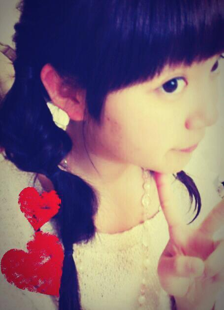
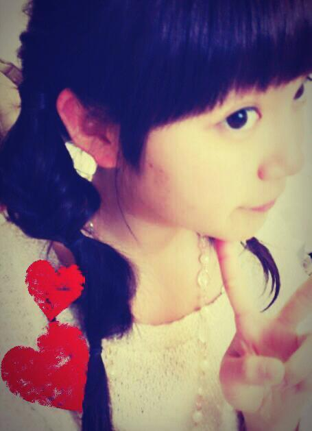
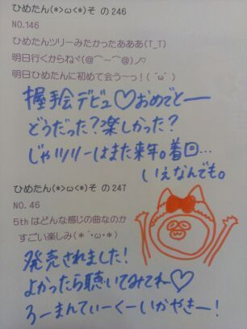

| 2013/03 16 Sat | ひめたん(*>ω<*)そ の270 |
いよいよ今日から
5thの握手会が始まるね(｀・ω・´)
ひめたんは
午前中は学校で通知表もらってくるから
そんで午後から幕張行くから
あのー
テンション低かったらそーっとしといてね。笑
笑。とか言いながら結構切実に。ふへへ←
あっでもスルーも悲しいからやめてねーっ
20(祝)の千葉全握はまいやんとぺあ！
まいやんとの全握ぺあ初めてー///
嬉しいー照れちゃうー(〃ω〃)
まいやんふぁんのみなさんはじめまして＊
よろしくお願いします！
ひめきゅんさんもよろしくねー♪
そんなわけで昨日は
美容院行ってきましたー∩^ω^∩
ヘアアレしてもらたーよー！

あのねー
このあと1時間ちょいウォーキングしたから
ちょっと汚くなっちゃったんだけど
編み込みってか みつあみってか
とにかく可愛いの！すーごいの！
なんかメルヘンなのー(´。・ω・。｀)
今日の質問返しはおとこのこもだけど
おにゃーのこは好きかもー♪
5thの握手会が始まるね(｀・ω・´)
ひめたんは
午前中は学校で通知表もらってくるから
そんで午後から幕張行くから
あのー
テンション低かったらそーっとしといてね。笑
笑。とか言いながら結構切実に。ふへへ←
あっでもスルーも悲しいからやめてねーっ
20(祝)の千葉全握はまいやんとぺあ！
まいやんとの全握ぺあ初めてー///
嬉しいー照れちゃうー(〃ω〃)
まいやんふぁんのみなさんはじめまして＊
よろしくお願いします！
ひめきゅんさんもよろしくねー♪
そんなわけで昨日は
美容院行ってきましたー∩^ω^∩
ヘアアレしてもらたーよー！

あのねー
このあと1時間ちょいウォーキングしたから
ちょっと汚くなっちゃったんだけど
編み込みってか みつあみってか
とにかく可愛いの！すーごいの！
なんかメルヘンなのー(´。・ω・。｀)
今日の質問返しはおとこのこもだけど
おにゃーのこは好きかもー♪

 お出かけは、誰と行くことが多いですか？
お出かけは、誰と行くことが多いですか？
? 家族?友だち?メンバー?一人
うーん際どい。
ちょっと寂しいこと言うと、
あんまおでかけしないの。インドアなの。ふへへ
しいていうなら家族が多いかなー(´・ω・ `)
洗顔とかなに使ってるの？
プロアクティブ歴が長かったよー( ^ω^ )
ひめたーんは何の香水使ってるの？
香水...ではないんだけど香りものといえば
ボディーファンタジーの
ボディースプレーシュガーバニラ使ってる＊
そろそろ香水デビューしたいなーんー
何かおすすめあったら教えておにゃのこ！
ひめたんはどうしてそんなに可愛いんですか？
美容法など教えて下さい
いえいえそんなことーと謙遜しつつ。
あっ最近"謙遜"が読めるようになったのーふへへ
あー美容法かーいろいろあるけど
やっぱり憧れの人を見つけて理想像があると
いーんでねーのー？と思う(ω)
ひめたんは宮崎あおいさんが大好きですねー
で何をしてるのか...とそゆ質問だよね？
うーん企業秘密＊？うへへ。笑
若月blogでひめたんが 一週間で痩せると言って本当に
4キロ痩せたとあったけど どんなことしたか教えて下さい(>_<)
若月ブログに、ひめたんが1週間で4kg痩せたって書いてあったんだけど、どーやって痩せたの?(>_<)
そう。これねーブログでは
ひっとっこっとっもっ言わなかったけど。笑
ひそかにダイエットしてました
あんのー年末年始にかけてかなー
まあ簡単で単純な "食べずに動く" ってやつだけど
オススメはしないです辛いから。
"バランスのいいごはん+ウォーキング" スタイルで
今は頑張ってるので、
成果が出るのに時間がかかるけど
待っててくださいみなさーん＼(^^)／
昆布だしとかつおだしどっちが好き？←
違いがよーわからーん！笑
あのね、美味しかったらそれでいーの！
三分かからないくらいの簡単なおすすめ料理ってありますか？
＊たまごごはん・のりたま
＊ばなな・ヨーグルト→ミキサー
のりたまは最強ー♪
ひめたんはすぅちゃんと
洋服の貸し借りはするんですか。
するよー好きな系統は全然違うけどねー
うーん言葉で表現するなら
姉さんは ふわふわ系、ひめたんは ふりふり系、
すうは ばしばし系が好きです。
すうはぴんくが似合わないらしいけど
ひめたんはぴんくが大好きです。その逆が水色。
ひめたんは最近、
すうちゃんと会ったのはいつですか？⊂((・x・))⊃
えっとーえとえと
一緒に住んでます。笑
虹の色ををひめたんが決めていいことになりました。
ひめたんが作る虹の色はどんな色ですか？
ピンクのグラデーションの虹とかね！
そんでもってキラキラとかいれちゃったりねー♪

(＊´・ω・＊)
コメント(123)
2013/03/16 08:18